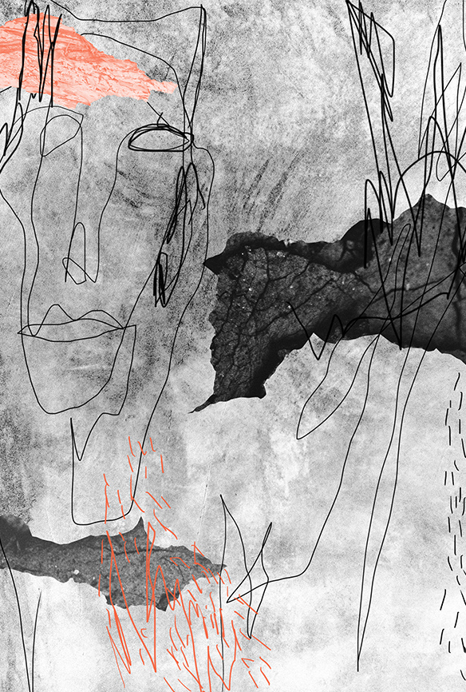

Realicé una serie de ilustraciones digitales para Sir.Ilo, un grupo de asesoría de marketing que se categoriza por su naturaleza relajada y contemporánea. Elegí la técnica de collage para generar imágenes versátiles para su marca y de manera paralela, representar la variedad de sus proyectos. La paleta de color surge a partir de que las creadoras de Sir.Ilo buscan proyectarse como femeninas pero fuertes, relajadas pero responsables. Es por eso que se compone por tonos cálidos y no tan saturados contrastados con otros mucho más brillantes. Para las ilustraciones, utilicé la línea continua para generar rostros y figuras abstractas, la calidad del trazo refuerza el concepto informal y espontáneo de la marca.
